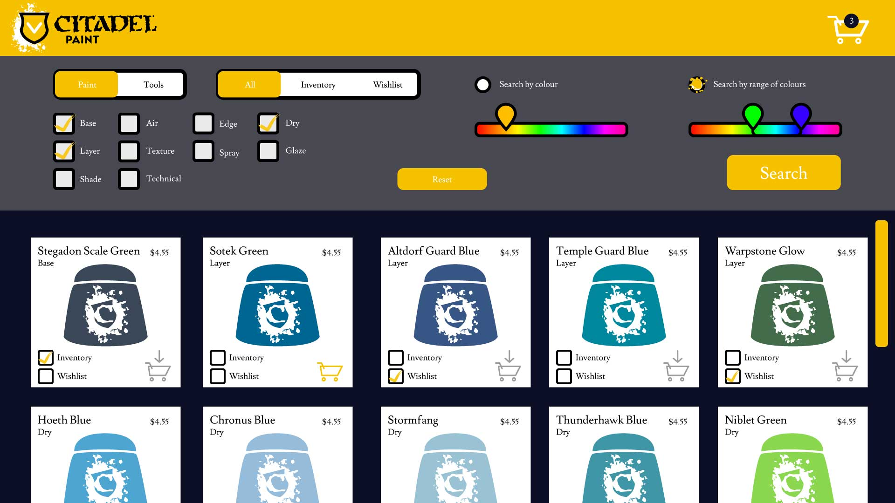
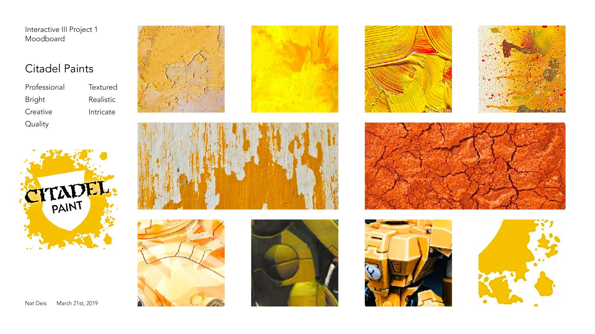
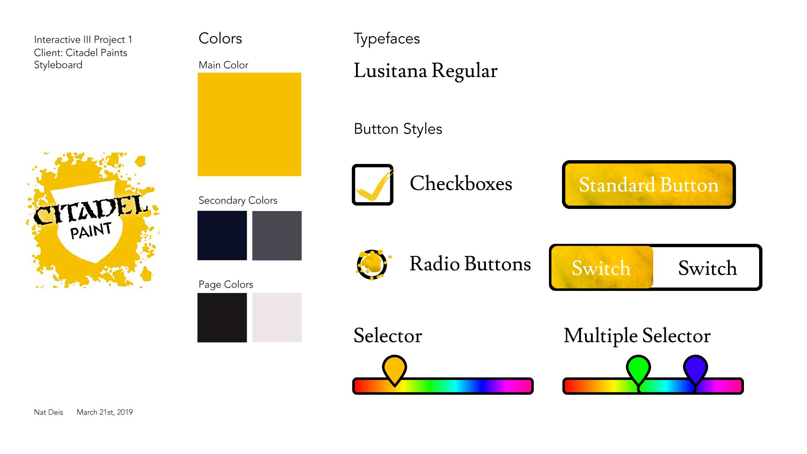
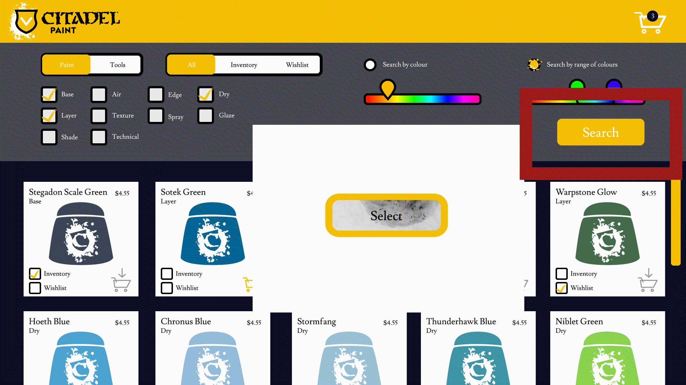
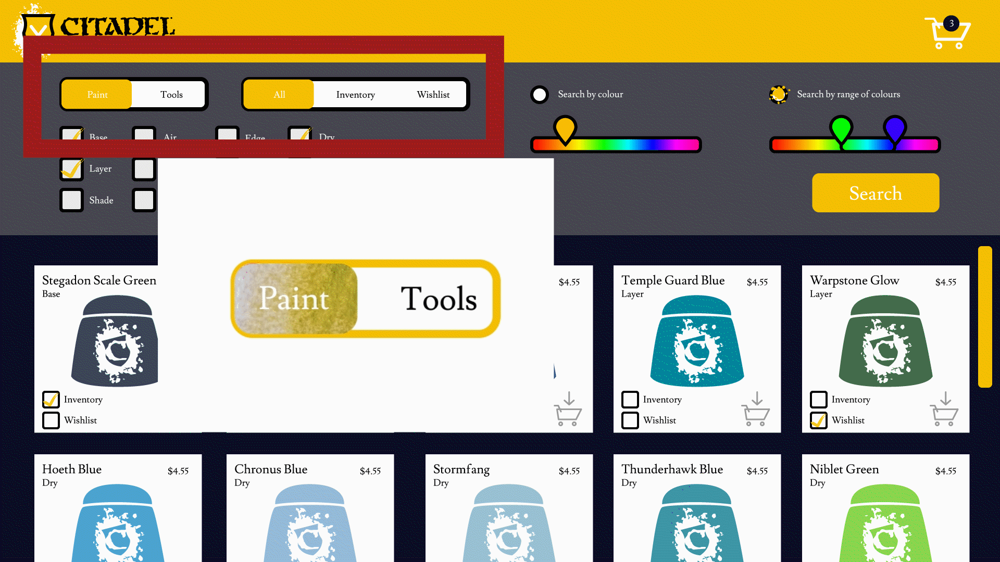
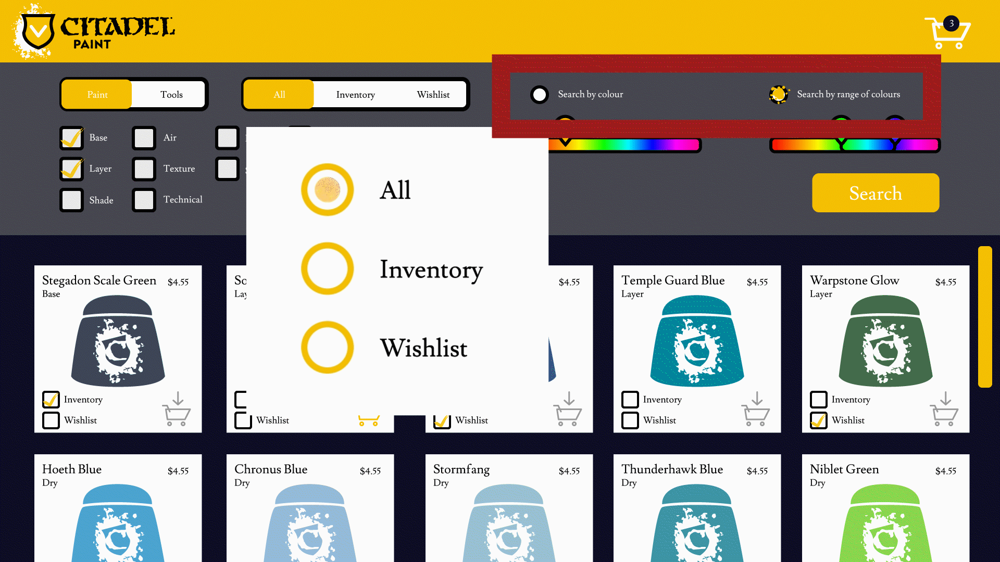

Micro Interactions Project – Citadel Paint Search Engine
This is a web application designed for the Citadel Paint brand of hobby paint. I created this to design a more streamlined way to browse their paint collection.
Final Page Composition
Moodboard
Styleboard
Standard Button
Toggle Switch
Check Boxes

Radio Buttons
Slider

Range Slider